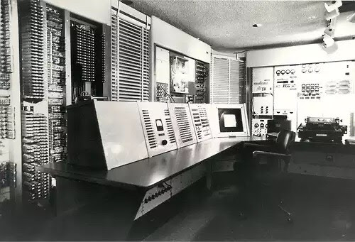
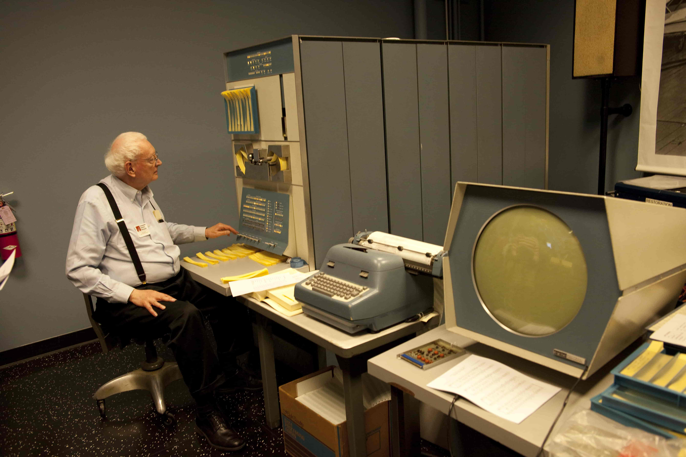
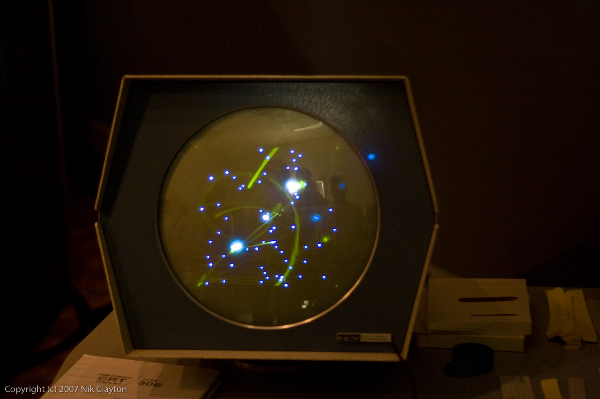

Década de 60
Na década de 1960, o Instituto de Tecnologia de Massachusetts era um dos principais centros de pesquisa na área da computação no mundo e dispunha do TX-0, um computador dotado de transistores, ao invés de válvulas, e que era menor que os mainframes padrão da época. O computador logo atraiu um grupo de estudantes de engenharia, que passaram a desenvolver nele ferramentas de programação, além de jogos simples, como Mouse in the Maze (que simulava um rato em um labirinto) e Tic-Tac-Toe (o jogo da velha). O TX-0 logo foi substituído pelo PDP-1, minicomputador que possuía um monitor com resolução de 512 x 512 e capacidade de plotar qualquer ponto na tela.
Decididos a explorar o novo hardware, Steve Russell e seus colegas criaram um jogo em que se controlava duas naves espaciais e cujo objetivo dos jogadores era acertar torpedos uns nos outros. Em 30 de julho de 1961, era testado pela primeira vez Spacewar!, considerado o primeiro jogo eletrônico de tiro da história.
  